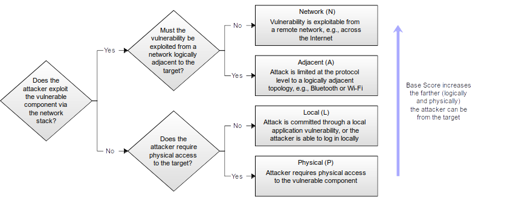
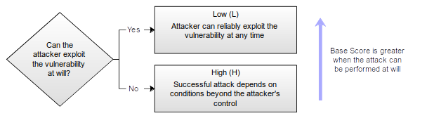
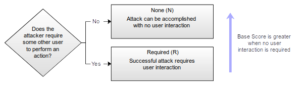
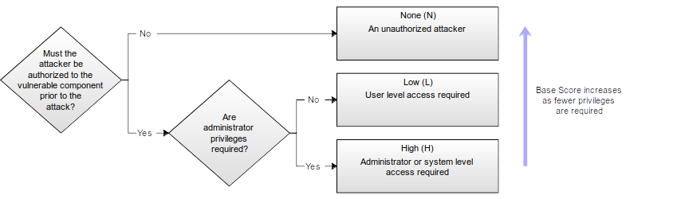
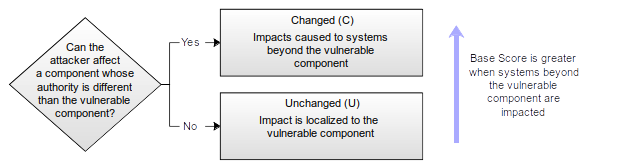
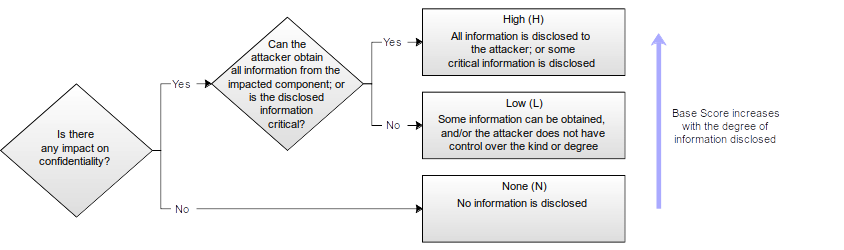
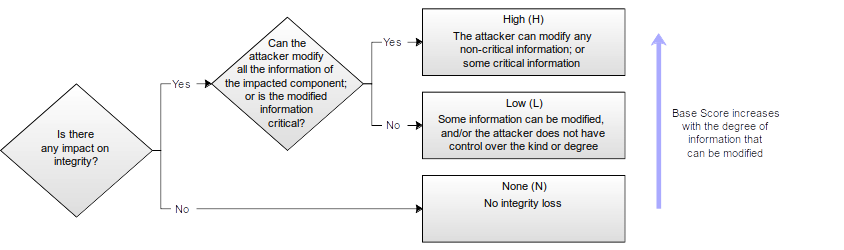
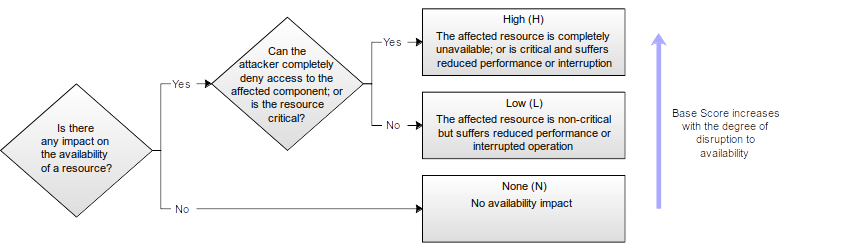

Common Vulnerability Scoring System version 3.1: User Guide
CVSS Version 3.1 Release
This page updates with each release of the CVSS standard. It is
currently CVSS version 3.1, released in June 2019. If you wish to use a
specific version of the User Guide, use:
Common Vulnerability Scoring System v3.1: User Guide
Also available in PDF format (408KiB).
The Common Vulnerability Scoring System (CVSS) is an open framework for
communicating the characteristics and severity of software vulnerabilities. CVSS
consists of three metric groups: Base, Temporal, and Environmental. The Base
group represents the intrinsic qualities of a vulnerability that are constant
over time and across user environments, the Temporal group reflects the
characteristics of a vulnerability that change over time, and the Environmental
group represents the characteristics of a vulnerability that are unique to a
user's environment. The Base metrics produce a score ranging from 0 to 10, which
can then be modified by scoring the Temporal and Environmental metrics. A CVSS
score is also represented as a vector string, a compressed textual
representation of the values used to derive the score. This document provides
the official specification for CVSS version 3.1.
The most current CVSS resources can be found at https://www.first.org/cvss/
CVSS is owned and managed by FIRST.Org, Inc. (FIRST), a US-based non-profit
organization, whose mission is to help computer security incident response teams
across the world. FIRST reserves the right to update CVSS and this document
periodically at its sole discretion. While FIRST owns all right and interest in
CVSS, it licenses it to the public freely for use, subject to the conditions
below. Membership in FIRST is not required to use or implement CVSS. FIRST does,
however, require that any individual or entity using CVSS give proper
attribution, where applicable, that CVSS is owned by FIRST and used by
permission. Further, FIRST requires as a condition of use that any individual or
entity which publishes scores conforms to the guidelines described in this
document and provides both the score and the scoring vector so others can
understand how the score was derived.
1. Introduction
This guide supplements the Common Vulnerability Scoring System (CVSS) version
3.1 Specification Document with additional information including significant
changes from CVSS version 3.0, additional scoring guidance, and scoring rubrics.
Since its initial release in 2004, CVSS has enjoyed widespread adoption. In
September 2007, CVSS v2.0 was adopted as part of the Payment Card Industry Data
Security Standard (PCI DSS). In order to comply with PCI DSS, merchants
processing credit cards must demonstrate that none of their computing systems
has a vulnerability with a CVSS score greater than or equal to 4.0. In 2007, the
National Institute of Standards and Technology (NIST) included CVSS v2.0 as part
of its Security Content Automation Protocol (SCAP). In March 2016, CVSS v3.0
was formally adopted as an international standard for scoring vulnerabilities
(ITU-T X.1521).
2. Changes in CVSS Version 3.1
Changes between CVSS versions 3.0 and 3.1 focus on clarifying and improving the
existing standard without introducing new metrics or metric values, and without
making major changes to existing formulas. The significant changes are explained
below.
2.1. CVSS Measures Severity, not Risk
The CVSS Specification Document has been updated to emphasize and clarify the
fact that CVSS is designed to measure the severity of a vulnerability and should
not be used alone to assess risk.
Concerns have been raised that the CVSS Base Score is being used in situations
where a comprehensive assessment of risk is more appropriate. The CVSS v3.1
Specification Document now clearly states that the CVSS Base Score represents
only the intrinsic characteristics of a vulnerability which are constant over
time and across user environments. The CVSS Base Score should be supplemented
with a contextual analysis of the environment, and with attributes that may
change over time by leveraging CVSS Temporal and Environmental Metrics. More
appropriately, a comprehensive risk assessment system should be employed that
considers more factors than simply the CVSS Base Score. Such systems typically
also consider factors outside the scope of CVSS such as exposure and threat.
2.2. Changes to Attack Vector and Modified Attack Vector
CVSS v3.0 described the metric values for Attack Vector (AV) using references to
the Open Systems Interconnection (OSI) model. While technically accurate, this
wording may be unfamiliar to the general CVSS provider and consumer population,
so has been reworded.
The Attack Vector (AV) metric value Adjacent (A) has a limited usage, as defined
in CVSS v3.0. Ambiguity over the attack vector for logically adjacent or trusted
networks (MPLS, VPNs, etc.) is addressed by expanding the definition of Adjacent
to include these limited access networks.
Section 3.6 contains new guidance on using the Modified Attack Vector
Environmental Metric when resources are exclusively behind a firewall.
2.3. Changes to Scoring Guidance
The CVSS Specification Document and User Guide have been updated with additional
guidance to help CVSS analysts produce scores that are consistent and defensible
across various situations that were previously considered ambiguous. A sampling
of the new scoring guidance is listed below.
2.3.1. Scoring Should Assume Detailed Knowledge
The CVSS Specification Document has been updated to clarify that, when scoring
Base Metrics, it should be assumed that the attacker has advanced knowledge of
the weaknesses of the target system, including general configuration and default
defense mechanisms (e.g., built-in firewalls, rate limits, or traffic policing).
Refer to Section 2.1 of the CVSS v3.1 Specification Document for more
information.
2.3.2. Score Based on Privileges Gained, not Attained
Additional text has been added to Section 2.3 of the Specification Document to
clarify that only the increase in access, privileges gained, or other negative
outcome as a result of successful exploitation should be considered when scoring
the impact metrics of a vulnerability.
When scoring impact, CVSS analysts should consider the privileges the attacker
has prior to exploiting a vulnerability and compare those to the privileges they
have after exploitation. The change in privileges is then captured in the Impact
Metrics, i.e., Confidentiality, Integrity and Availability.
Finally, when scoring a delta change in Impact Metric, the final impact should
be used.
2.3.3. Assume Vulnerable Configurations
The explanation of Attack Complexity in CVSS v3.0 considers “the presence of
certain system configuration settings”. This text has been removed from CVSS
v3.1. If a specific configuration is required for an attack to succeed, the
vulnerable component should be scored assuming it is in that configuration,
providing it is a reasonable configuration. Unreasonable configurations are
those that deliberately place the target in a vulnerable state, e.g., by
disabling security features, or that conflict with documented configuration
guidance, e.g., by using a non-default configuration that a product vendor
explicitly states should never be used.
2.3.4. Scope Explanation Reworded
The explanation of Scope in the Specification Document has been rewritten to be
clearer, along with the concepts of Vulnerable Component and Impacted Component.
Section 3.5 of the User Guide contains additional information and several
examples.
2.3.5. Scoring Vulnerabilities in Software Libraries (and Similar)
New guidance explains how to score the impact of a vulnerability in a library.
Refer to Section 3.7 for more information.
2.3.6. Multiple CVSS Base Scores
New guidance explicitly allows multiple CVSS Base Scores to be generated for a
vulnerability that affects multiple product versions, platforms, and/or
operating systems. Refer to Section 3.8 for more information.
2.3.7. Guidance for Using Environmental Security Requirements Metrics
The Environmental Metric Group includes three Security Requirement metrics:
Confidentiality Requirement (CR), Integrity Requirement (IR), and Availability
Requirement (AR). Section 3.11 contains new guidance and examples explaining how
these metrics can be used.
2.4. Guidance for Scoring Attack Vector
New guidance on scoring Attack Vector is provided in Section 3.10.
2.5. The CVSS Extensions Framework
Section 3.9 defines a standard method of extending CVSS to include additional
metrics and metric groups while retaining the official Base, Temporal, and
Environmental Metrics. The additional metrics allow industry sectors such as
privacy, safety, automotive, healthcare, etc., to score factors that are outside
the core CVSS standard.
2.6. Formula Changes
The formulas used to calculate Base, Temporal and Environmental scores have
altered in the following ways.
The formulas have been restructured to make them clearer and remove ambiguity
caused by defining Impact sub-score for different purposes. These are purely
clarifications and do not alter the scoring.
2.6.2. Roundup Function Redefinition
The “Round up” function in CVSS v3.0 has been renamed Roundup and is now
defined more precisely to minimize the possibility of implementations generating
different scores due to small floating-point inaccuracies. This can happen due
to differences in floating point arithmetic between different languages and
hardware platforms. Appendix A in the Specification Document describes the
problem in detail and suggests solutions.
As an example of the scoring differences this redefinition may cause, the CVSS
v3.1 version of the reference JavaScript CVSS calculator on FIRST's website
scores the following vulnerabilities differently compared to v3.0:
- The Temporal Score for all vulnerabilities which have a Base Score of 2.5,
5.0 or 10.0, Exploit Code Maturity (E) of High (H), Remediation Level (RL)
of Unavailable (U) and Report Confidence (RC) of Unknown (U) is 0.1 lower in
CVSS v3.1 than for 3.0. For example, the following metric combination has a
Temporal Score of 4.7 in CVSS v3.0, but 4.6 in v3.1:
CVSS:3.1/AV:P/AC:H/PR:L/UI:R/S:U/C:L/I:L/A:H/E:H/RL:U/RC:U
-
Some combinations of metrics have Environmental Scores that differ when
scored with CVSS v3.1 rather than v3.0. This is due to a combination of the
redefinition of Roundup and the change to the ModifiedImpact sub-formula
explained in the next section. Less than 7% of metric combinations are 0.1
higher in CVSS v3.1 than v3.0, and less than 1% are 0.1 lower. No
Environmental Scores differ by more than 0.1.
- Other implementations of the CVSS formulas may see different scoring changes
between CVSS v3.0 and v3.1 if they previously generated different CVSS v3.0
scores due to the problems that the CVSS v3.1 formula changes are intended
to fix.
In CVSS v3.0, certain sets of Environmental metrics have the counter-intuitive
property that changing the value of a Security Requirement or Modified Impact
metric to a value that should produce a higher Environmental Score results in a
lower score. The problem occurs only if Modified Scope is Changed and at least
one of the Security Requirement metrics is High. As an example, the following
vulnerability has an Environmental Score of 5.6:
CVSS:3.0/AV:N/AC:L/PR:N/UI:N/S:C/C:H/I:H/A:H/E:U/RL:T/RC:U/CR:L/IR:L/AR:H/MAV:P/MAC:H/MPR:H/MUI:R/MS:C/MC:L/MI:H/MA:H
Raising Modified Confidentiality (MC) from Low to High should result in an equal
or higher score, but results in a decreased Environmental Score of 5.5:
CVSS:3.0/AV:N/AC:L/PR:N/UI:N/S:C/C:H/I:H/A:H/E:U/RL:T/RC:U/CR:L/IR:L/AR:H/MAV:P/MAC:H/MPR:H/MUI:R/MS:C/MC:H/MI:H/MA:H
The root cause is the part of the ModifiedImpact formula that is used when
Modified Scope is Changed, and specifically the term 3.25 × (MISS - 0.02)15.
MISS is the Modified Impact Sub-Score. This lowers the highest Environmental
Scores while making no appreciable difference to low Environmental Scores.
However, as the highest possible values of MISS are reached, this term increases
more quickly than the first term of the sub-formula, resulting in the value of
the sub-formula decreasing as MISS increases.
Various potential fixes were examined, with the goal of minimizing the number of
sets of metrics that would result in different Environmental Scores between CVSS
v3.0 and v3.1. It was found that reducing the effect of MISS by multiplying it
with a constant worked, but altered more scores than a similar approach that
also reduced the outer exponent from 15 to 13. The value of the MISS constant
that is new in CVSS v3.1 is the largest value that fixes all instances of the
problem, and being the largest value means it results in the fewest changes to
unaffected scores.
2.7. Update to the Version Identifier in the Vector String
The Vector String has been updated so that it begins with CVSS:3.1 rather than
CVSS:3.0. Although no other changes have been made to the Vector String, CVSS
v3.1 contains changes to the definition of some of the metric values and to the
formulas, so it is important to correctly indicate the version of CVSS.
3. Scoring Guide
Below are a number of recommendations for analysts when scoring vulnerabilities
with CVSS v3.1.
3.1. CVSS Scoring in the Exploit Life Cycle
When understanding when to score the impact of vulnerabilities, analysts should
constrain impacts to a reasonable final impact which they are confident an
attacker is able to achieve. Ability to cause this impact should be supported by
the Exploitability sub-score as a minimum, but may also include details from the
vulnerability’s description. For example, consider the following two
vulnerabilities.
In vulnerability 1, a remote, unauthenticated attacker can send a trivial,
crafted request to a web server which causes the web server to disclose the
plaintext password of the root (administrator) account. The analyst only knows
from the Exploitability sub-score metrics and the vulnerability description that
the attacker has access to send a crafted request to the web server in order to
exploit the vulnerability. Impact should stop there; while an attacker may be
able to use these credentials to later execute code as the administrator, it is
not known that the attacker has access to a login prompt or method to execute
commands with those credentials. Gaining access to this password represents a
direct, serious loss of Confidentiality only:
Base Score: 7.5 CVSS:3.1/AV:N/AC:L/PR:N/UI:N/S:U/C:H/I:N/A:N
In vulnerability 2, a local, low-privileged user can send a trivial, crafted
request to the operating system which causes it to disclose the plaintext
password of the root (administrator) account. The analyst knows from the
Exploitability sub-score metrics and the vulnerability description that the
attacker has access to the operating system, and can log in as a local, low
privileged attacker. Gaining access to this password represents a direct,
serious loss of Confidentiality, Integrity, and Availability because the analyst
can reasonably issue commands as the root / administrator account (assume that
the attacker could log out from their own account and log back in as root):
Base Score: 7.8 CVSS:3.0/AV:L/AC:L/PR:L/UI:N/S:U/C:H/I:H/A:H
3.2. Confidentiality and Integrity, Versus Availability Impacts
The Confidentiality and Integrity metrics refer to impacts that affect the
data used by the service. For example, web content that has been maliciously
altered, or system files that have been stolen. The Availability impact metric
refers to the operation of the service. That is, the Availability metric
speaks to the performance and operation of the service itself – not the
availability of the data. Consider a vulnerability in an Internet service such
as web, email, or DNS that allows an attacker to modify or delete all web files
in a directory. The only impact is to Integrity, not Availability, as the web
service is still functioning – it just happens to be serving back altered
content.
3.3. Local Vulnerabilities Exploited by Remote Attackers
Guidance concerning Local attacks was improved in CVSS v3.0 by clarifying the
definitions of the Network and Adjacent values of the Attack Vector metric.
Specifically, analysts should only score for Network or Adjacent when a
vulnerability is bound to the network stack. Vulnerabilities which require user
interaction to download or receive malicious content (which could also be
delivered locally, e.g., via USB drives) should be scored as Local.
For example, a document parsing vulnerability, which does not rely on the
network in order to be exploited, should typically be scored with the Local
value, regardless of the method used to distribute such a malicious document
(e.g., it could be a link to a web site, or via a USB flash drive).
3.4. Vulnerability Chaining
CVSS is designed to classify and rate individual vulnerabilities. However, it is
important to support the needs of the vulnerability analysis community by
accommodating situations where multiple vulnerabilities are exploited in the
course of a single attack to compromise a host or application. The scoring of
multiple vulnerabilities in this manner is termed Vulnerability Chaining. Note
that this is not a formal metric, but is included as guidance for analysts when
scoring these kinds of attacks.
When scoring a chain of vulnerabilities, it is the responsibility of the analyst
to identify which vulnerabilities are combined to form the chained score. The
analyst should list the distinct vulnerabilities and their scores, along with
the chained score. For example, this may be communicated within a vulnerability
disclosure notice posted on a web page.
In addition, the analyst may include other types of related vulnerabilities that
could be chained with the vulnerabilities being scored. Specifically, the
analyst may list generic types (or classes) of related vulnerabilities that are
often chained together, or provide further descriptions of required
preconditions that must exist. For example, one might describe how certain kinds
of SQL Injection vulnerabilities are precursors to a cross-site scripting (XSS)
attack, or how a particular kind of buffer overflow would grant local
privileges. Listing the generic types or classes of vulnerabilities provides the
minimum information necessary to warn other users, without potentially informing
attackers about new exploit opportunities.
Alternatively, the analyst may identify (in the form of a machine readable and
parsable list of vulnerabilities as CVE IDs or CWEs), a complete list of
specific related vulnerabilities that are known to be (or are very likely to be)
chained to one or more of the chained vulnerabilities being scored in order to
exploit an IT system. In the event that a vulnerability can be exploited only
after other preconditions are met (such as first exploiting another
vulnerability), it is acceptable to combine two or more CVSS scores to describe
the chain of vulnerabilities by scoring for the least-restrictive Exploitability
sub-score metrics and scoring for the most-impactful Impact sub-score metrics.
The following example uses the Exploitability, Scope, and Impact sub-scores to
describe the chain.
Vulnerability A is CVSS:3.1/AV:L/AC:L/PR:L/UI:N/S:U/C:H/I:H/A:H. It requires a
local, low-privileged user in order to exploit.
Vulnerability B is CVSS:3.1/AV:N/AC:L/PR:N/UI:R/S:U/C:L/I:L/A:L. It provides an
unprivileged, remote attacker the ability to execute code on a system with Low
impacts if a local user interacts to complete the attack.
Given A and B, chain C could be described as the chain of B → A,
CVSS:3.1/AV:N/AC:L/PR:N/UI:R/S:U/C:H/I:H/A:H which combines the Exploitability
of B, the scope is unchanged in both cases, and the Impact of A, because if one
can exploit B and gain the code execution as a local user from it, then one has
satisfied the prerequisite to subsequently launch A causing an impact from
vulnerability A.
3.5. Scope, Vulnerable Component, and Impacted Component
When a vulnerability in a component governed by one security authority is able
to affect resources governed by another security authority, a Scope change has
occurred. This typically happens either when the vulnerable component and
impacted component are part of different systems (physical or logical) governed
by different security authorities; or when an artificial boundary has been made
to logically separate vulnerable and impacted components for security reasons
(e.g., when executing a process in sandbox). When a security boundary mechanism
separating components is circumvented due to a vulnerability and this causes a
security impact outside of the security scope of the vulnerable component, a
Scope change has occurred. In this case, the vulnerability usually resides in
the component that implements or controls the security boundary since the
vulnerability restricted to the component alone would not cause an impact
outside of its scope, assuming the security boundary works as expected.
The following example vulnerabilities look at different aspects of scoring
Scope:
-
A vulnerability in a virtual machine that enables an attacker to read and/or
delete files on the host operating system (perhaps even its own virtual
machine) is considered a Scope change. In this example, there are two
separate security authorities: one that defines and enforces access control
for the virtual machine and its users, and another that defines and enforces
access control for the host system within which the virtual machine runs.
-
A violation of a security boundary between microprocessor privilege levels
should be considered when scoring vulnerabilities using CVSS. User space
programs’ capabilities running in lower privilege levels are typically
limited in what instructions they can run and what registers they can write
to even when running under operating system administrator privileges. A
vulnerability that allows a program running in a lower privilege level to
break out and run arbitrary code in a higher privilege level should be
considered a Scope change.
-
The security boundary between secure enclaves integrated in microprocessors
and the rest of operating system processes, including the operating system
kernel itself, should be considered when scoring vulnerabilities using CVSS.
A vulnerability that allows other processes to impact the confidentiality,
integrity or availability of data or code in a secure enclave should be
considered a Scope change.
-
A Scope change occurs when a vulnerability in a web application impacts user
clients, e.g., web browsers. Common vulnerabilities of this type include
cross-site scripting and URL redirection. The vulnerability is in the web
application, but there is an impact to the data/behavior of the victim
users’ web browsers, which are within a different security scope.
-
In a distributed environment, a vulnerability in a component providing
connectivity, protection, or authentication services to components in a
different security authority should be scored as a Scope change if a
successful attack impacts these other components. For example, a
vulnerability in a component such as a router, firewall, or authentication
manager that affects the primary availability of one or more downstream
components should be scored as a Scope change. However, if a successful
attack either does not affect at all, or causes only negligible impact to
components in a different security authority, the vulnerability should be
scored as Scope unchanged. For example, a vulnerability in a component
designed to be deployed as part of a larger fault-tolerant topology should
not be scored with a changed Scope if the fault-tolerance means a successful
attack does not affect components in different security authorities. Any
effect on additional services provided by the vulnerable component is
considered a secondary impact and not a scope change.
-
A vulnerability in a simple Portable Document Format (PDF) reader that
allows an attacker to compromise other files on the same operating system
when a victim opens a malicious PDF document is scored as Scope unchanged.
This assumes the PDF reader does not have any authorization functionality
that would be considered a separate security authority from the underlying
operating system.
-
A SQL injection vulnerability in a web application is not usually considered
a Scope change assuming the credentials are shared between web application
and impacted SQL database, and therefore they are part of the same security
scope.
-
A vulnerability that crashes a web server or SSH server is not considered a
Scope change since the impact is limited only to the service provided by the
affected server. The impact on users is secondary and is not considered a
Scope change as users are not considered components.
-
A vulnerability that permits an attacker to exhaust a shared system
resource, such as filling up a file system, should not be considered a Scope
change as the attacker is still acting under the usual capabilities of the
application and not breaching any security boundary.
-
By exploiting a vulnerability in an application that allows users restricted
access to resources shared with other components across multiple security
scopes (e.g., operating system resources such as system files), an attacker
can access resources that they should not be able to access. Since there is
already a valid path across the trust boundary, there is no Scope change.
- A vulnerability in an application that implements its own security authority
which allows attackers to affect resources outside its security scope is
scored as a Scope change. This assumes the application provides no features
for users to access resources governed by a higher-level security authority
shared with other components across multiple security scopes (e.g., the
resources of the underlying operating system). One example would be a web
application that allows users to read and modify web pages and files only
under the web application’s installation paths, and provides no feature for
users to interact beyond these paths. A vulnerability in this application
allowing a malicious user to access operating system files unrelated to this
application is considered a Scope change.
3.6. Vulnerable Components Protected by a Firewall
If a vulnerability is scored with an Attack Vector (AV) of Network (N) and the
analyst has high confidence that the vulnerable component is deployed on a
secure network unavailable from the Internet, Modified Attack Vector (MAV) may
be scored as Adjacent, reducing the overall CVSS v3.1 score.
Example: MySQL Stored SQL Injection (CVE‑2013‑0375)
Base Score: 6.4 CVSS:3.1/AV:N/AC:L/PR:L/UI:N/S:C/C:L/I:L/A:N
Environmental Score: 5.4 CVSS:3.1/AV:N/AC:L/PR:L/UI:N/S:C/C:L/I:L/A:N/MAV:A
3.7. Scoring Vulnerabilities in Software Libraries (and Similar)
When scoring the impact of a vulnerability in a library, independent of any
adopting program or implementation, the analyst will often be unable to take
into account the ways in which the library might be used. While specific
products using the library should generate CVSS scores specific to how they use
the library, scoring the library itself requires assumptions to be made. The
analyst should score for the reasonable worst-case implementation scenario. When
possible, the CVSS information should detail these assumptions.
For example, a library that performs image conversion would reasonably be used
by programs that accept images from untrusted sources over a network. In the
reasonable worst-case, it would pass them to the library without checking the
validity of the images. As such, an analyst scoring a vulnerability in the
library that relates to the incoming data should assume an Attack Vector (AV) of
Network (N), but explain this assumption in the summary of the vulnerability. If
the library might run with normal privileges, having lower impact on the
embedding implementation, or with high privileges, increasing the impacts, the
analyst should assume high privileges while scoring the vulnerability in the
library.
When scoring a vulnerability in a given implementation using the impacted
library, the score must be re-calculated for that specific implementation. For
example, if an implementation embeds the vulnerable library mentioned in the
previous example, but only operates on local files, the Attack Vector (AV) would
be Local (L). If the implementation that embeds this library does not invoke any
of the faulty functions or does not support the mode that triggers that
vulnerability, it would have no interface or attack vector to exploit the
vulnerability. Thus, that vulnerability in the embedded library would have no
impact on that implementation, resulting in a score for the given implementation
of 0.
3.8. Multiple CVSS Base Scores
It is common for a vulnerability to be present on multiple product versions,
platforms, and/or operating systems. In some circumstances, the Base metrics may
differ on different product versions, platforms, and/or operating systems. For
example, a hypothetical vulnerability is applicable to multiple operating
systems produced by the same vendor. The Attack Complexity (AC) of this
vulnerability on a legacy operating system is Low (L). However, a newer
operating system has new inherent protection capabilities that change the Attack
Complexity to High (H). This variance ultimately leads to different Base Scores
for the same vulnerability on the two operating systems.
It is acceptable to score and publish multiple Base Scores for a single
vulnerability provided each has additional language outlining the specific
product versions, platforms, and/or operating systems that are relevant to the
score. Values for all Base Score attributes (not only a pre-calculated Base
Score) must be supplied for each affected product version, platform, and/or
operating system using a standard format. In situations where multiple Base
Scores are applicable but only a single score is provided, the highest Base
Score must be utilized.
3.9. CVSS Extensions Framework
Opportunities exist to leverage the core foundation of CVSS for additional
scoring efforts. For example, a proposal was presented to the CVSS Special
Interest Group (SIG) to incorporate privacy into CVSS by overlaying combinations
of CVSS Base and Environmental metrics to derive a Privacy Impact.
The following guidelines define a standard method of extending CVSS to include
additional metrics and metric groups while retaining the official Base,
Temporal, and Environmental Metrics. The additional metrics allow industry
sectors such as privacy, safety, automotive, healthcare, etc., to score factors
that are outside the core CVSS standard.
3.9.1. Guidelines
-
Formulas, constants or definitions of existing CVSS Base, Temporal, or
Environmental Metrics must not be modified. If a change to an existing item
is desired, create a new metric group with a new name and work on it as
desired.
-
New metrics must not be added to existing metric groups, but must be added
to new metric groups. New metric groups can be based on existing metric
groups.
-
New metrics can be based on sub-formulas in the standard, such as the
Exploitability sub-score, but these could change, be removed or be replaced
in future revisions of the standard, and so absolute values should not be
relied upon.
-
New metric groups can optionally have a score. If they do, the score must be
between 0.0 and 10.0, with 10.0 being the most severe. The score must be
based on adjusting the Base Score and/or Environmental and Temporal scores,
similar to how Environmental/Temporal scores adjust the Base Score to
produce the final score.
-
The CVSS SIG does not officially approve extensions, but rather acts as a
consulting body, similar to IETF. The CVSS SIG welcomes and encourages
innovation, but has an interest in maintaining consistency across all
proposed extensions.
-
The list of validated extensions will be listed on the first.org web site,
similar to IANA.
CVSS Extension vector strings must be listed separately, utilizing the following
format:
CVSS:3.1/AV:x/AC:x/PR:x/UI:x/S:x/C:x/I:x/A:x
EXT:1.0/NEW1:VAL1/NEW2:VAL2
where:
EXT:n.n is a unique extension identifier and major.minor version number
NEWn is a unique attribute of the extension for each new metric
VALn is a unique value for the attribute for each new metric value
3.10. Attack Vector Considerations
When scoring Attack Vector, use Adjacent or Network (as appropriate), when a
network connection is required for an attack to succeed, even if the attack is
not launched over a network. For example, a local attacker may be able to trick
a vulnerable, privileged, local program into sending sensitive data to a server
of the attacker’s choosing over a network. As a network connection is required
to gather the sensitive data this is scored with an Attack Vector of Network.
Vulnerabilities where malicious data is received over a network by one
component, then passed to a separate component with a vulnerability should be
scored with an Attack Vector of Local. An example is a web browser that
downloads a malicious office document, saves it to disk, and then starts a
vulnerable office application which reads the saved file.
In cases where the vulnerable functionality is part of the component that
receives the malicious data, Attack Vector should be scored as Network. An
example is a web browser with a vulnerability in the browser itself, or a
browser plugin or extension, that triggers when the malicious data is received.
3.11. Security Requirements
The Security Requirement metrics are part of the Environmental Metric Group and
modify the weighting that the modified impact metrics have on the overall
Environmental Score. This section provides guidance on selecting appropriate
metric values for these based on the characteristics of a specific environment.
The examples are simplified to illustrate the concepts.
3.11.1. Confidentiality Requirement (CR)
The Confidentiality Requirement of a system should be based on the
classification level of the data that is stored or used by the user and/or
applications running on the target system. Encryption of the data at rest on
this device should also be taken into consideration when establishing the
Confidentiality Requirement. Data that passes through a device without being
consumed or processed (e.g., a switch or firewall) should not be taken into
consideration when assessing this attribute. See below for examples.
Note: The volume of data may influence the value of the attribute, but should
not have as much impact as the classification (i.e., type) of data that is being
stored or used.
-
A device that stores data classified at the highest level should have this
attribute rated as High. However, if the sensitive data is encrypted at
rest, this attribute may be rated Medium.
-
A device that stores data classified as non-public but not as high as the
highest level should have this attribute rated as Medium. However, if the
sensitive data is encrypted at rest, this attribute can be rated Low.
-
A device that stores data that can be openly shared publicly should have
this attribute rated as Low.
-
Network equipment such as a router, switch, or firewall will generally be
rated as Medium due strictly to the sensitivity of information such as
routing tables, etc.
- Any system that stores login credentials without encryption should have this
attribute rated as High. This includes service accounts and credentials
embedded into scripts or source code.
3.11.2. Integrity Requirement (IR)
The Integrity Requirements of a system focus on the importance of the accuracy
of the data it stores or uses. Data that passes through a device without being
consumed or processed (e.g., a switch or firewall) should not be taken into
consideration when assessing this attribute. The use of encryption on the data
at rest should not be taken into consideration for this attribute. See below
for examples:
-
Devices that contain monetary transactional data and/or personally
identifiable information (PII) should be rated High.
-
Devices that contain data directly used to make business or risk management
decisions should be rated at a minimum of Medium. As the severity of the
decisions increase, so should the Integrity Requirement rating.
-
Devices that contain data directly used to make health decisions should be
rated High.
-
Network equipment such as a router or switch will generally be rated at
least Medium due strictly to the sensitivity of information such as
forwarding tables, etc.
- Firewalls should be rated as High due to the sensitivity of the rule set.
3.11.3. Availability Requirement (AR)
The Availability Requirement of a system should be based on the uptime
requirements and redundancy of the device or the applications hosted by the
device. Devices that are part of redundant clusters will have lower Availability
Requirements. See below for examples:
-
Devices without full capacity redundancy that are rated with recovery
requirements less than 24 hours should be rated High.
-
Devices without full capacity redundancy that are rated with recovery
requirements between 1-5 days should be rated Medium.
-
Devices with recovery requirements of more than 5 days should be rated Low.
-
Clustered devices and/or those with full capacity redundancy should be rated
as Low.
- Devices that are required to have rapid response times for transactional
purposes based on regulatory requirements, should be rated High.
4. Glossary of Terms
Affected: An impacted component is affected by a vulnerability if a
vulnerability in a vulnerable component is exploitable in a way that causes a
negative impact to the Confidentiality, Integrity, and/or Availability of the
impacted component.
Authority: A computing container that grants and manages privileges to
resources. Examples of authorities include a database application, an operating
system, and a sandbox environment.
Chained Score: The Base Score produced by scoring two or more chained
vulnerabilities.
Chained Vulnerabilities: See Vulnerability Chaining.
Component: Refers to either a hardware or software component.
Hardware Component: A physical computing device.
Software Component: A software program or module that contains computer
instructions to be executed, e.g., an operating system, Internet
application, or device driver.
Exploitable: A weakness or flaw in a component is exploitable if it
enables the component to be manipulated in an unintended or unexpected way by an
attacker to negatively impact Confidentiality, Integrity, and/or Availability.
Impacted Component: The component that suffers the consequence of the
exploited vulnerability. It can either be the same component as the vulnerable
component, or, if a scope changed has occurred, a different one.
Privileges: A collection of rights (typically read, write and execute)
granted to a user or user process which defines access to computing resources.
Reasonable: An action, expectation, or outcome that most informed and aware
people would consider just, rational, appropriate, ordinary or usual in the
circumstances.
Resources: A software or network object that is accessed, modified, or
consumed by a computing device, e.g., computer files, memory, CPU cycles, or
network bandwidth.
Scope: The collection of privileges defined and managed by an authorization
authority when granting access to computing resources.
Successful Attack: A successful attack (or successful exploit of a
vulnerability) is a situation where an attacker causes any negative impact to
Confidentiality, Integrity, and/or Availability by leveraging a weakness in the
vulnerable component.
Vulnerability: A weakness or flaw in the functional behavior of a vulnerable
computational component (software or hardware) that can be exploited, resulting
in a negative impact to the Confidentiality, Integrity, and/or Availability of
an impacted component.
Vulnerability Chaining: The sequential exploit of multiple vulnerabilities
in order to attack an IT system, where one or more exploits at the end of the
chain require the successful completion of prior exploits in order to be
exploited. See also the definition available at
https://cwe.mitre.org/documents/glossary/#Chain.
Vulnerable: A component is vulnerable if it contains a weakness or flaw
that can be exploited, given the necessary conditions and/or exposure.
Vulnerable Component: The software (or hardware) component that bears the
vulnerability, and that would be patched.
Weakness: An error in software or hardware implementation, code, design, or
architecture that, depending on exposure, could be exploited by an attacker.
5. Scoring Rubrics
The scoring rubrics are an aid to scoring vulnerabilities by supplementing the
metric definitions in the Specification Document.
Diagram 1: Attack Vector Rubric

Diagram 2: Attack Complexity Rubric

Diagram 3: User Interaction Rubric

Diagram 4: Privileges Required Rubric

Diagram 5: Scope Rubric

Note, if a Scope change has not occurred, Confidentiality,
Integrity and
Availability impacts reflect consequence to the vulnerable component,
otherwise they reflect consequence to the component that suffers the
greater impact.
Diagram 6: Confidentiality Impact Rubric

Diagram 7: Integrity Impact Rubric

Diagram 8: Availability Impact Rubric
